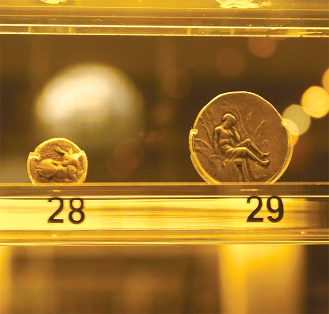

Đồng xu cổ - Những thế giới song hành
Vào thời vua Hùng Vương thứ 13, khoảng thế kỷ thứ VII trước Công nguyên, trong khi thế giới Trung Đông vẫn mải mê với những kiệt tác như vườn treo Babylon ở Baghdad thì một nền triết học rực rỡ đã khơi mào ở thế giới Hy Lạp cổ đại. Ở đó, các đồng tiền xu cũng bắt đầu được lưu hành. Nghe đâu khoảng cùng thời gian đó, những đồng tiền xu cũng xuất hiện ở Trung Hoa cổ đại, thời Xuân Thu. Nếu đúng thế thì thật lạ lùng khi hai thế giới tách biệt cùng nghĩ ra tiền xu cùng thời...

Nền văn minh đầu tiên ở châu Âu trị vì bởi các vua Minos ra đời sau nước Văn Lang với các vua Hùng của ta. Nhưng ta tuy thế vẫn còn muộn so với thế giới. Khi thần Dớt biến thành bò đi chinh phục nàng Europe, khi Lạc Long Quân diệt Ngư Tinh cưới Âu Cơ sinh trăm trứng, thì thế giới con người Ai Cập cổ đại đã rất phát triển: Những kim tự tháp đầu tiên đã được dựng lên mà ngày nay ta vẫn còn thấy đầy bí hiểm.
Thế nhưng, từ khi nàng Europe lấy được chồng hư - là thần Dớt, các nền văn minh ở châu Âu phát triển nhanh chóng.
Vào thời vua Hùng Vương thứ 13, khoảng thế kỷ thứ VII trước Công nguyên, trong khi thế giới Trung Đông vẫn mải mê ăn chơi với những kiệt tác như vườn treo Babylon ở Baghdad thì một nền triết học rực rỡ đã khơi mào ở thế giới Hy Lạp cổ đại. Ở đó, các đồng tiền xu cũng đã bắt đầu được lưu hành. Nghe đâu khoảng cùng thời gian đó, những đồng tiền xu cũng xuất hiện ở Trung Hoa cổ đại, thời Xuân Thu. Nếu đúng thế thì thật lạ lùng khi hai thế giới tách biệt cùng nghĩ ra tiền xu cùng thời.
Đến thời vua Hùng Vương thứ 17, tức là thời Alexander đại đế - vua xứ Macedonia, những đồng xu rất đẹp đã được sử dụng. Không biết các đồng xu đẹp có liên quan gì đến các cuộc viễn chinh của Alexander đại đế hay không. Nghe đâu (các bạn đừng tin) trước mỗi trận đánh, Alexander đại đế lại tung đồng xu hên xui: Nếu trúng hình Dớt thì quyết đánh, còn rơi vào hình Europe thì tạm lui. Nhưng đồng xu thời đó không bằng phẳng, ông hay tung vào hình Dớt. Do tài năng xuất chúng, lại đánh nhiều nên thắng nhiều, khi chinh phục xong Ai Cập ông được ví như con trai của thần Dớt. Xui thay, khi sang đến Ấn Độ, ông bị hổ vồ mất đồng xu, không còn quyết định sáng suốt nữa nên thất bại.
Thời nay, một tác dụng của đồng xu cổ là để ghi lại các câu chuyện, và để chứng tỏ người kể chuyện... không hoàn toàn bịa. Trên ba đồng xu cổ mà tôi đã được tận mắt chiêm ngắm tại Bảo tàng khảo cổ học ở Chania trên đảo Crete (Hy Lạp) là những câu chuyện đầy thú vị: Thần Dớt biến thành bò bắt nàng Europe (đồng xu 27); thần Dớt đưa nàng về hang ngồi nghỉ đợi nàng thức giấc (đồng xu 28), nàng Europe dưới gốc cây ở Gortyna (đồng xu 29)...